6. Downtown
- 6. Downtown
- 1. If I Were Looking For a Vehicle
- 2. Meanwhile, The Porcupine Stops To Fill-Up
- 3. A Sponsored Dragon-Slaying
- The Inadvertent Meteor
- Dwemthy’s Array
- Bread Riddles
- Creature Code
- The Littlest Metaprogrammer
- Enough Belittling Instruction and Sly Juxtaposition—Where Is Dwemthy’s Array??
- Introducing: You.
- Representing and Calling a Monster
- Rabbit Fights ScubaArgentine!
- The Shoes Which Lies Are Made Of
- The Harsh Realities of Dwemthy’s Array AWAIT YOU TO MASH YOU!!
- The Making of Dwemthy’s Array
- Method Missing
- 4. So, Let's Be Clear: The Porcupine Is Now To The Sea
- 5. Walking, Walking, Walking, Walking and So Forth
- 6. Just Stopping To Assure You That the Porcupine Hasn't Budged
- 7. I'm Out

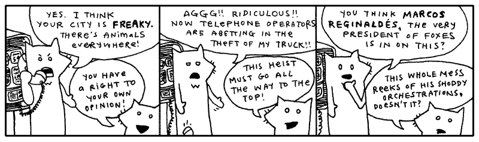
Oblivious to their involvement in the expansive plan of The Originals, both the tall fox and the much shorter fox had wandered right into the red alert zone, the city Wixl. I desire a spatula to scoop them aside with, shuffle them off to the coast near the beach hatcheries, hide them in piles of fish eggs, hold down their pointy ears, concealing their luxurious hides. And above them I would stand, casting an unmoving shadow, holding my rifle aloof.
I can’t. I have you to teach. I have to groom and care for myself. The lightbulbs upstairs need changing. A free pack of halogen lightbulbs just showed up out of the mail. Somebody out there is obviously trying to get me to use them. So I’m going to screw ‘em in. And just stand there, casting an unmoving shadow, holding my rifle aloof.
Should that shadow be nice and defined, then I’ll keep ‘em.
1. If I Were Looking For a Vehicle
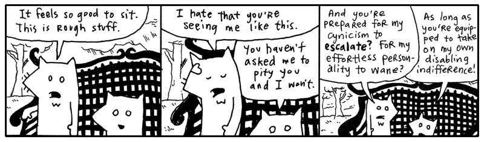
I like seeing these two out in the wild. They got pretty bored here in the studio. They started making up weird slogans and stuff. They had some phrase they kept repeating, forming fixations upon. You can’t be exposed to all that contrived fox nonsense.
Let’s just say: I am really trying my best to keep things collegiate. Having never attended college, I can’t well say if every passage written chimes right with the stringent criteria which academia demands. I have university friends aplenty, some who tour the globe in their pursuits, and I try to inflect my voice with just their blend of high culture.
Sometimes I applaud myself for going beyond the work of my educated friends—only in quiet corridors, we never butt heads publicly—because I have actually subscribed to a school of thought while they are still in their books, turning and turning.
I am a preeventualist. I have dabbled in it long enough and am glad to come forth with it. Inevitably, some of you have already started mining this book for Marxist symbology. I am sad to kill those interpretations, but I believe any nihilist conclusions you’ve drawn will still hold up under scrutiny.
Anyway, I’ll drop the rhetoric. I only mention preeventualism because, aside from being a refreshing and easy alternative to the post-modernism we’re born with, this meta-cult offers a free lost-and-found service for the residents of Wixl.
I have no way of alerting the foxes to this service. And I’m sure it’s too soon for their truck to be listed. Still, the good intentions are here.
If you’re connected to the Internet, the above Python should have downloaded the web page from the Internet and printed it to the screen. In a message resembling this:
THE PREEVENTUALIST'S LOSING AND FINDING REGISTRY
(a free service benefiting the ENLIGHTENED who have been LIGHTENED)
---
updates are made daily, please check back!
---
this service is commissioned and
subsidized in part by The Ashley Raymond
Youth Study Clan
...
all seals and privileges have been filed
under the notable authorship of Perry W. L. Von Frowling,
Magistrate Polywaif of Dispossession. Also, Seventh Straight Winner
of the esteemed Persistent Beggar's Community Cup.
...
ABOUT THE REGISTRY
==================
Hello, if you are new, please stay with us. A brief explanation of our service will
follow. First, a bit of important news from our beloved magistrate. (The kids call
him Uncle Von Guffuncle. Tehe!)
IMPORTANT NEWS
==============
/ 15 April 2005 /
hi, big news. we were on channel 8 in wixl and ordish. cory saw it. i was on and
jerry mathers was on. if you didn't see it, e-mail cory. he tells it the best. all
i can say is those aren't MY hand motions!! (joke for people who watch channel 8.)
thanks harry and whole channel 8 news team!!
- perry
/ 07 April 2005 /
we're all sifting through the carpet here at hq, but if you could all keep an eye out
for caitlin's clipboard, she's too quiet of a gal to post it and i know that it's
REALLY important to her. she had a few really expensive panoramic radiographs of her
husband's underbite clipped to a few irreplaceable photos of her husband in a robocop
costume back when the underbite was more prominent. she says (to me), "they'll know
what i mean when they see them." i don't know what that means. :(
i've checked: * the front desk * the hall * the waiting area * the bathroom * the candy
closet * the big tv area * the lunch counter * the disciples room * gaff's old room
(the one with the painting of the cherry tree) * the server room * staircase. i'll
update this as i find more rooms.
- love, perry
/ 25 Feb 2005 /
server went down at 3 o'clock. i'm mad as you guys. gaff is downstairs and he'll
be down there until he gets it fixed. :O -- UPDATE: it's fixed, back in bizz!!
- perry
/ 23 Feb 2005 /
i know there's a lot of noise today. stanley bros circus lost twelve llamas and a
trailer and a bunch of Masterlocks and five tents. they're still finding lost stuff.
pls keep your heads, i need everyone's help. these entertainers have _nothing_. i
mean it. i gave a guy a purple sticker today (it's just something i like to do as a
kind gesture) and he practically slept on it and farmed the ingredients for pizza sauce
on it. they are on rock bottom.
so please donate. i know we don't have paypal or anything. so if you want to donate,
just post that you found something (a children's bike, a month of perishable canned
goods) and that it has the circus people's names written on it or something.
- great, perry
/ 15 Nov 2004 /
preeventualist's day sale. if you lose something today, you get to pick one free
item (of $40 value or less) from the house of somebody who found something. we're
having so much fun with this!! this is EXACTLY how i got my rowing machine last year
and i LOVE IT!!
- perry
I think the Youth Study Clan is doing a great job with this service. It’s a little hokey and threadbare, but if it can get animals to stop using their instinctive means of declaring ownership, then hats off.
Still, a preeventualist youth group? How can that be? You’ve got to at least flirt with real cynicism before you can become a preeventualist. And you definitely can’t attend school. So, I don’t know.
Going back to the list of instructions from the Preeventualist’s Losing and Finding Registry.
USING THE L&F SERVER
====================
The L&F is a free service. The acts of losing and finding are essential qualities in
building a preeventualist lifestyle. We hope to accommodate your belief.
We do not use HTML, in order to simplify our work here. Our guys are already working
fifteen hour days. (Thanks, Terk!! Thanks, Horace!!)
You may search our service for your lost items. Or you may add your lost (or found)
item to our registry. This is done by typing the proper address into your browser.
SEARCHING
=========
To search for lost items, use the following address:
http://preeventualist.org/lost/search?q={search word}
You may replace {search word} with your search term. For example, to search for "cup":
http://preeventualist.org/lost/search?q=cup
You will be given a list of cups which have been lost or found.
If you want to search for only lost cups or only found cups, use the `searchlost` and
`searchfound` pages:
http://preeventualist.org/lost/searchlost?q=cup
I’m not playing games. I know where the truck is. Really, I’m not teasing you. I’ll show you in just a sec. I’m just saying, look at the foxes:
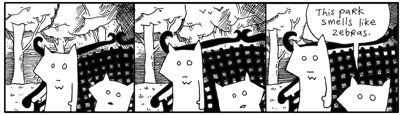
They are helpless. And yet, here is this great tool. A possible key to getting out of this mess. I just want to poke around, see if there are any clues here.
# Searching all found items containing the word `truck'.
import requests
url = "https://preeventualist.org/lost/searchfound"
response = requests.get(url, params={"q": "truck"}, timeout=10)
response.raise_for_status()
print(response.text)
I’m not seeing anything about the tall fox’s truck in this list. That’s okay. The foxes are out of it anyway. We have some time.
You’ve learned a very simple technique for retrieving a web page from the
Internet. The code uses the requests library, which was written by one of my
favorite Pythonists, Kenneth Reitz. Requests hides much of the machinery behind
HTTP and lets us treat information from the Internet much like information from
a file: something we can open, read, and work with.
In a previous chapter, we stored your diabolical ideas in a text file. You read
these files in Python using open. Here we will write to a file.
# Opening an idea file from a folder on your computer.
idea = "Hide lettuce in the church chairs."
with open("folder/idea-about-hiding-lettuce-in-the-church-chairs.txt", "w", encoding="utf-8") as f:
f.write(idea)
Files are input-output objects. You can read from a file and write to a file. Many of Python's input-output tools share a common set of methods, such as read() and write(). The open() function hands you one of these objects, and the with statement makes sure it is properly closed when you're finished.
IO is your ticket to the outside world. It's the rays of sunlight slipping through the prison bars. Through IO, your program can communicate with files, network connections, in-memory streams, and all sorts of contraptions beyond its little cell.
And files are not the only things that can be read from. The Internet is overflowing with information waiting to be hauled into your program. With the requests library, reading a web page is simplified so it's just as easy as reading a file, though with a bit of different syntax.
import requests
# Reading an idea file available on a web site.
response = requests.get(
"https://example.com/idea-about-hiding-lettuce-in-the-church-chairs.txt"
)
print(response.text)
The object returned by requests.get() isn't a file, but it behaves in a familiar way: you ask it for its contents and then get to work. Whether your ideas are stored on your computer, on a web server across the ocean, or in some dusty corner of the cloud, Python gives you tools for bringing them into your program.
The important thing to remember is that information can come from many places. A local file. A web page. An API. A network service. Different sources, but often the same goal: open a connection, read some data, and let the mischief begin.
Reading Files Line by Line
When you’re using Python to get information from the web, you can read the entire response at once, or you can process it one line at a time. Reading line by line is useful when you’re searching for something specific, or when the response is large and you want to conserve your computer’s memory.
import requests
with requests.get(
"https://preeventualist.org/lost/search",
params={"q": "truck"},
stream=True,
timeout=10,
) as response:
response.raise_for_status()
for line in response.iter_lines(decode_unicode=True):
if "pickup" in line:
print(line)
The above code retrieves the list of trucks found by preeventualists, then displays only those lines that contain the word "pickup". That way, we can trim away the descriptions and look for only the pertinent lines.
The expression
uses Python’s in operator to search a string. It asks whether the string "pickup" occurs anywhere inside line.
>>> "pickup" in "A blue pickup truck was found."
True
>>> "pickup" in "A red sedan was found."
False
When you retrieve a web page normally, you can read the entire response into memory:
Usually, this is perfectly fine. Most web pages are only a few thousand bytes or perhaps a few megabytes. But if a response is very large, loading the whole thing into memory at once may be wasteful.
That's where stream=True comes in:
url = "https://preeventualist.org/lost/search"
with requests.get(url, params={"q": "truck"}, stream=True, timeout=10) as response:
response.raise_for_status()
for line in response.iter_lines(decode_unicode=True):
if "pickup" in line:
print(line)
With streaming enabled, requests can process the response incrementally rather than loading its entire contents into memory. The iter_lines() method gives us one line at a time, so we can examine each line as it arrives.
The same idea works with ordinary files (make a file "trucks.txt" and add the line pickup your truck to it):
Notice how similar the two examples are. Whether the lines are coming from a file or from a web response, Python lets us process them with a for loop. This ability to work with different kinds of objects in the same way is one of Python's most useful ideas: if an object can be iterated over, you can loop over it.
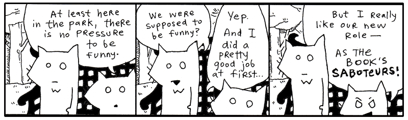
And that's going to become important. A for loop isn't limited to lists. Python can iterate over files, strings, network responses, generators, and objects you create yourself. In the pages ahead, we'll take a closer look at how this works, and how you can make your own objects produce values one at a time.
Many of the objects we've already used are doing exactly that. A file doesn't hand a for loop every line at once. Instead, it produces lines one at a time as the loop asks for them. This approach is memory-efficient and allows Python to work with very large amounts of data.
One of Python's most useful tools for producing values on demand is the generator.
Yielding is Kiddie Generator
Python often uses generators to provide data one piece at a time. Rather than building an entire collection in memory up front, a generator produces values only when they are needed.
You've already seen this pattern with files and streamed web responses. Instead of loading every line at once, Python lets you process them one at a time as they arrive. Generators work in much the same way.
Imagine a file as a long stream of lines. A generator can crawl through that stream, yielding one line after another only when requested. This makes generators memory-efficient, easy to write, and ideal for working with large amounts of data.
class TextStream:
# Definition for the read_lines generator method. Notice how it takes no
# special argument for this to work — Python turns it into a generator
# automatically because of the yield statement below.
def read_lines(self):
while not self.is_eof(): # until we reach the end of the file...
yield self.readline() # send a line back to the caller
The yield keyword is the easiest way to create a generator. One word. Just like a curtain has a pullstring or like a suitcase has a handle. Inside a function, you can press the blinking yield button and it will pause execution and hand a value back. Glowing a strong red color until the outer code asks for the next piece. And then it goes back to blinking and you can press the button again if you like.
So we got the CEO yelling at the warehouse foreman that he needs to process all the gidgets right now or "I'll have your ass!". The whole warehouse is silent hearing the foreman getting chewed out. "What's a gidget?" asks one of the new guys. "It's like a widget but with g".
"Boss is really ticked off, we gotta get it done today," the foreman says to the warehouse workers. the foreman isn't stupid though. He knows if he tries to bring in 10,000 gidgets all at once, there won't be any space to process the gidgets, let alone air to breathe. So he asks us to code the new guy a program that that will bring in 100 gidgets at a time.
We start with a lot of data that will take a long time to process, break it down into chunks, and yield one chunk at a time. So yield is the perfect tool to use.
# A giant list of 10,000 gidgets to process
all_gidgets = list(range(10000, 20000))
def batch_processing(gidgets, batch_size=100):
"""
Yields manageable chunks of data, one at a time.
"""
for i in range(0, len(gidgets), batch_size):
yield gidgets[i : i + batch_size] # hand off the next chunk
So with the new batch processing code setup, the foreman calls in the first batch and takes care of business, processing the 100 gidgets.
>>> warehouse = batch_processing(all_gidgets)
>>> first_batch = next(warehouse)
>>> takin_care_of_business(first_batch)
All we need to do is run the batch_processing again and another 100 gidgets come down the chute!
Keep 'em coming! Send a couple hundred this time!
And the day went on processing batch after batch of gidgets, until no one wanted to ever see a gidget again.
While yield is great for building a generator, we can use the iter function to create an iterator out of a list.
>>> lines = iter(["first, birth.", "then, a life of flickering images.", "and, finally, the end."])
>>> print(next(lines))
>>> print(next(lines))
>>> print(next(lines))
# prints out:
# first, birth.
# then, a life of flickering images.
# and, finally, the end.
The next() function is often used in conjunction with iterators and generators. The next() function pulls the next item right off an iterator stream. Think of next as turning on the conveyor belt so more gidgets come flowing down from the rafters into the warehouse.
Custom iterators implement __iter__() and __next__(). They can be useful, but writing one often means managing state explicitly and raising StopIteration when it is exhausted.
Generators are often the simpler choice for producing a sequence lazily. A generator function automatically implements the iterator protocol and raises StopIteration when it finishes. They do not replace every custom iterator, but they cover many common streaming tasks. In Python, any function containing yield becomes a generator, allowing elegant stream processing.
def squares_generator(stop):
for i in range(stop):
yield i ** 2 # Pauses here and remembers its spot
# Usage
my_generator = squares_generator(3)
print(next(my_generator)) # 0
print(next(my_generator)) # 1
A Generator (using yield) is like punctual monk with infinite patience that runs to you with exactly one answer, hands it over, pauses, and runs back to get the next one only when you request it (next()).
-
The Monk: The monk doesn't take up memory by carrying all answers at once; it travels light and fast.
-
The Punctual: The individual data payload yielded at that exact moment called.
-
The Patience: The monk waits patiently at its last delivery location until you call it again.
Generators are memory-efficient, fast to write, and highly readable. They are used in many places, including file I/O, processing large datasets, streaming data from APIs, traversing directories, and working with infinite sequences.
# Using a generator function to lazily yield file content, one line at a time
def read_file(path):
with open(path) as f:
for line in f:
yield line
Each time you call read_file(...), you get back a brand new generator, starting fresh from the top of the file:
The generator's output comes down the conveyor belt fast and furious, one line at a time — but only once you actually start pulling on it, with next() or a for loop. If you want to keep pulling lines from the same stream, hang on to that one generator object and keep calling next() on it; calling read_file(...) again just sends a fresh trip down the conveyor belt from the very beginning of the file.
# The generator opens two files simultaneously and yields both handles
# to the caller using context management.
def double_open(filename1, filename2):
with open(filename1) as f1, open(filename2) as f2:
yield f1, f2
# Prints the first line of each file side-by-side, using tuple unpacking.
for f1, f2 in double_open("idea1.txt", "idea2.txt"):
print(f"{f1.readline().strip()} | {f2.readline().strip()}")
Better yet: yield stops your conveyor belt, handing control back to you so you can do your work before resuming the conveyor belt. So while a generator does the work of reading lines from a file, getting the next line is handled by the loop itself.
You may also wonder what the yield keyword has to do with gidgets. And really, it’s a good question, and I believe the gidget analogy provides a good answer, assuming we are talking about the pop-culture icon Francine "Gidget" Lawrence performed by Sally Field. When you run a standard function, you are giving that function control of your program. But with a generator, you don't want to give up full control, no siree, Bob. You just want to give up a bit of control and get back a single answer. I imagine Gidget's story is the same. In a scary, unpredictable world, Gidget helps us trust the world is here to support us as we mature and come into our own (If you are still not sure what a gidget is, let's trust and move on).
Preeventualism in a Gilded Box
You've learned quite a bit about the requests library and fetching information from the web. You know your way around modules, functions, and the occasional junk drawer full of forgotten code. Really, you can start rummaging through the Wixl lost-and-found service without me.
Let's neatly encapsulate the entire service into a single module.
import requests
BASE_URL = "http://preeventualist.org/lost/"
def open_page(page, query):
response = requests.get(BASE_URL + page, params=query)
response.raise_for_status()
return response.text.split("--\n")
def search(word):
return open_page("search", {"q": word})
def search_lost(word):
return open_page("searchlost", {"q": word})
def search_found(word):
return open_page("searchfound", {"q": word})
def add_found(your_name, item_lost, found_at, description):
return open_page(
"addfound",
{
"name": your_name,
"item": item_lost,
"at": found_at,
"desc": description,
},
)
def add_lost(your_name, item_found, last_seen, description):
return open_page(
"addlost",
{
"name": your_name,
"item": item_found,
"seen": last_seen,
"desc": description,
},
)
At some point with your code, you need to start shaping it into something neat. Save the above code in a file called preeventualist.py.
This module is a very simple library for using the Preeventualist's service.
This is exactly how many Python libraries begin. You gather related functions together, store them in a file, and, if you're happy with the result and want the world to benefit, publish it for others to use.
These stragglers can import your module just as we imported requests earlier.
>>> import preeventualist
>>> print(preeventualist.search("truck"))
>>> print(
... preeventualist.add_found(
... "Why",
... "Python skills",
... "Wixl Park",
... "I can give you Python skills!\nCome visit poignantguide.net!"
... )
... )
The important thing isn't the lost-and-found service itself. The important thing is that we've hidden all the tedious details—URLs, query strings, and web requests—behind a handful of friendly function calls. Users of our module don't need to know how the service works. They simply ask for what they want, and the module does the legwork.
2. Meanwhile, The Porcupine Stops To Fill-Up
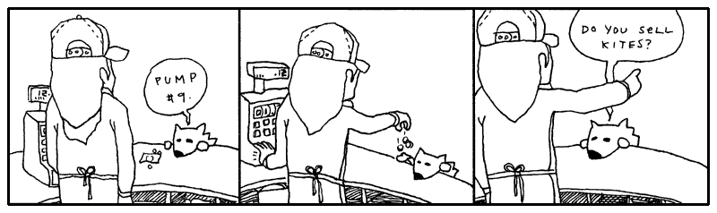
3. A Sponsored Dragon-Slaying
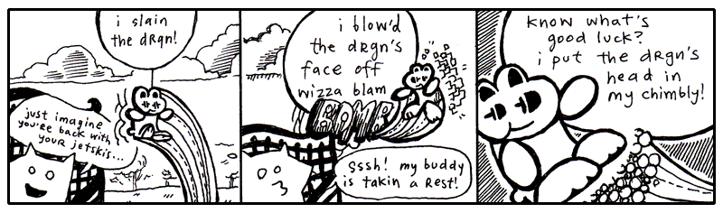
“Look around,” said Fox Small. “Some of us don’t have time for quests. Some of us have major responsibilities, jobs, so on. Livelihood, got it?”
“Heyyyy, my JOB was to kill the drgn!!” screamed the wee rabbit, blinking his eyes and bouncing frantically from tree to tree to pond to pond. “His snout was a HUGE responsibility!! His smoky breath was mine to reckon with!! I spent fifty dollars on the cab JUST to get out there, which was another huge huge ordeal. You have nothing on me, not a single indictment, my whole HERONESS is absoflutely unimpeachable, my whole APPROACH is abassoonly unapricotable, just ask Lester.”
“Who’s Lester?” said the Fox Small.
“Lester’s my cab driver! He parked at the base of Dwemthy’s Array!!” The rabbit ricocheted madly like a screensaver for a supercomputer. “Just ask Dwemthy!!”
“Well,” said the Fox Small. He turned back to look up at Fox Tall, who was sitting straight and looking far into the distance. “Wait, they have a parking lot on Dwemthy’s Array?”
“YEP!! And a pretzel stand!!”
“But, it’s an Array? Do they sell churros?”
“CHOCOLAVA!!” bleeted the rabbit.
“What about those glow-in-the-dark ropes that you can put in your hair? Or you can just hold them by your side or up in the air—”
“BRAIDQUEST!!”
“You should get a cut of the salesman’s commission,” spoke Fox Small. “Folks came out to see you kill the dragon, right?”
“BUT!! I don’t operate the tongs that actually extract the chocolava.”
“I’m just sayin’. You do operate the killing mechanism. So you have a stake in the ensalada.”
“OH NO!! I left my favorite lettuce leaves in Dwemthy’s Array!!” squealed the rabbit, twirling like a celebratory saber through the quaking oak. Distantly: “Or Lester’s trunk, maybe?”
“You know—Gheesh, can you stay put??” said Fox Small.
“My radio,” said Fox Tall, stirring to life for a moment, “in my pickup.” The glaze still seeping from his eyes. His stare quivered and set back into his face, recalling another time and place. A drive out to Maryland. Sounds of Lionel Richie coming in so clearly. The wipers going a bit too fast. He pulls up to a house. His mother answers the door. She is a heavily fluffed fox. Tears and makeup.
Slumping back down, “That porcupine is changing my presets.”
The rabbit bounded up on to the armrest of the park bench and spoke closely. “BUT!! Soon I will feast on drgn’s head and the juices of drgn’s tongue!!” The rabbit sat still and held his paws kindly.
“(Which I hope will taste like cinnamon bears,)” whispered the rabbit, intimately.
“I love cinnamon,” said Fox Small. “I should go killing with you some time.”
“You should,” said the rabbit and the eyes shine-shined.
“Although, salivating over a tongue. You don’t salivate over it, do you?”
“I DO!!” and the rabbit got so excited that Sticky Whip shot out of his eyes. (More on Sticky Whip in a later sidebar. Don’t let me forget. See also: The Purist’s Compendium to Novelty Retinal Cremes by Jory Patrick Sobgoblin, available wherever animal attachment clips are sold.)
“Okay, you’ve hooked me. I want to hear all about it,” Fox Small declared. “Please, talk freely about the chimbly. Oh, and Dwemthy. Who is he? What makes him tick? Then maybe, if I’m still around after that, you can tell me about what makes rabbits tick, and maybe you can hold our hands through this whole missing truck ordeal. I need consolation more than anything else. I could probably use religion right now. I could use your personal bravery and this sense of accomplishment you exude. Do you smoke a pipe? Could be a handy tool to coax along the pontification we must engage in.”
And the rabbit began expounding upon Dwemthy and the legend of Dwemthy and the ways of Dwemthy. As with most stories of Dwemthy, the rabbit’s tales were mostly embellishments. Smotchkkiss, there are delicacies which I alone must address.
Please, never ask who Dwemthy is. Obviously he is a mastermind and would never disclose his location or true identity. He has sired dynasties. He has set living ogres aflame. Horses everywhere smell him at all times. Most of all, he knows carnal pleasures. And to think that this…
This is his Array.
Dwemthy’s Array
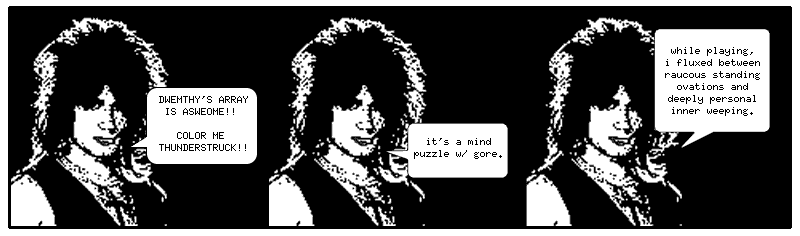
You stand at the entrance of Dwemthy’s Array. You are a rabbit who is about to die. And deep at the end of the List:
class Dragon(Creature):
_life = 1340 # tough scales
_strength = 451 # bristling veins
_charisma = 1020 # toothy smile
_weapon = 939 # fire breath
A scalding SEETHING LAVA infiltrates the cacauphonous ENGORGED MINESHAFTS deep within the ageless canopy of the DWEMTHY FOREST... chalky and nocturnal screams from the belly of the RAVENOUS WILD STORKUPINE... who eats wet goslings RIGHT AFTER they’ve had a few graham crackers and a midday nap… amidst starved hippos TECHNICALLY ORPHANED but truthfully sheltered by umbrellas owned jointly by car dealership conglomerates… beneath uncapped vials of mildly pulpy BLUE ELIXIR... which shall remain… heretofore… UNDISTURBED… DWEMTHY!!!
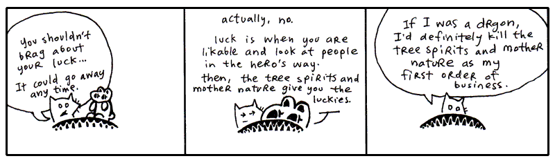
If you don’t understand Dwemthy’s Array, it is Dwemthy’s fault. He designed the game to complicate our lives and were it simpler, it would not be the awe-inspiring quest we’ve come to cherish in our arms this very hour.
Dwemthy’s Array has a winding history of great depth. It is not enough to simply say, “Dwemthy’s Array,” over and over and expect to build credentials from that act alone. Come with me, I can take you back a couple years, back to the sixties where it all started with metaprogramming and the dolphins.
You might be inclined to think that metaprogramming is another hacker word and was first overheard in private phone calls between fax machines. Honest to God, I am here to tell you that it is stranger than that. Metaprogramming began with taking drugs in the company of dolphins.
In the sixties, a prolific scientist named John C. Lilly began experimenting with his own senses, to uncover the workings of his body. I can relate to this. I do this frequently when I am standing in the middle of a road holding a pie or when I am hiding inside a cathedral. I pause to examine my self. This has proven to be nigh impossible. I have filled three ruled pages with algebraic notation, none of which has explained anything. The pie, incidentally, has been very easy to express mathematically.
But the scientist Lilly went about his experiments otherwise. He ingested LSD in the company of dolphins. Often in a dark, woeful isolation tank full of warm salt water. Pretty bleak. But it was science! (Lest you think him criminal: until 1966, LSD was supplied by Sandoz Laboratories to any interested scientists, free of charge.)
Drugs, dolphins and deprivation. Which led to Lilly’s foray into things meta. He wrote books on mental programming, comparing humans and computers. You may choose to ingest any substance you want during this next quote—most likely you're reaching for the grain of salt—but I assure you that there’s no Grateful Dead show on the lawn and no ravers in the basement.
When one learns to learn, one is making models, using symbols, analogizing, making metaphors, in short, inventing and using language, mathematics, art, politics, business, etc. At the critical brain (cortex) size, languages and its consequences appear. To avoid the necessity of repeating learning to learn, symbols, metaphors, models each time, I symbolize the underlying idea in these operations as metaprogramming.
John C. Lilly, Programming and Metaprogramming in the Human Biocomputer, New York, 1972.
We learn. But first we learn to learn. We setup programming in our mind which is the pathway to further programming. (Lilly is largely talking about programming the brain and the nervous system, which he collectively called the biocomputer.)
Lilly’s metaprogramming was more about feeding yourself imagery, reinventing yourself, all that. This sort of thinking links directly to folks out there who dabble in shamanism, wave their hands over tarot cards and wake up early for karate class. I guess you could say metaprogramming is New Age, but it’s all settled down recently into a sleeping bag with plain old nerdiness. (If you got here from a Google search for “C++ Metaprogramming”, stick around, but I only ask that you burn those neural pathways that originally invoked the search. Many thanks.)
Meta itself is spoken of no differently in your author’s present day.
All sensuous response to reality is an interpretation of it. Beetles and monkeys clearly interpret their world, and act on the basis of what they see. Our physical senses are themselves organs of interpretation. What distinguishes us from our fellow animals is that we are able in turn to interpret these interpretations. In that sense, all human language is meta-language. It is a second-order reflection on the ‘language’ of our bodies—of our sensory apparatus.
Terry Eagleton, After Theory, London, 2003, ch. 3.
To that end, you could say programming itself is a meta-language. All code speaks the language of action, of a plan which hasn’t been played yet, but shortly will. Stage directions for the players inside your machine. I’ve waxed sentimental on this before.
But now we’re advancing our study, venturing into metaprogramming, but don’t sweat it, it’s still just the Python you’ve seen already, which is why Dwemthy feels no qualms thrusting it at you right away. Soon enough it will be as easy to spot as addition or subtraction. At first it may seem intensely bright, like you’ve stumbled across your first firefly, which has flown up in your face. Then, it becomes just a little bobbing light which makes living in Ohio so much nicer.
Object-oriented programming is a way of organizing code around objects. But not as M.C. Escher would sketch it. The program isn't reaching back around and overwriting itself, nor are they climbing out of your screen and shaking hands with each other. No, it's much smaller than that.
Let's say it's more like a little orange pill you won at the circus. When you suck on it, the coating wears away and behind your teeth hatches a massive, floppy sponge brontosaurus. He slides down your tongue and leaps free, frolicking over the pastures, yelping, "Papa!" And from then on, whenever he freaks out and attacks a van, well, that van is sparkling clean afterwards.
Now, let's say someone else puts their little orange pill under the faucet. Not on their tongue, under the faucet. And this triggers a different cataclysm, which births a set of wailing sponge sextuplets. Umbilical cords and everything. Still very handy for cleaning the van. But an altogether different kind of chamois. And, one day, these eight will stir Papa to tears when they perform the violin concerto of their lives.
That's rather like what we're doing with classes. We put some common behavior and attributes into a class, and then use that class as a blueprint for creating objects.
The Creature class is our little orange pill. It contains the machinery that all our creatures can use. A Dragon is one of the creatures produced from that machinery.
class Dragon(Creature):
_life = 1340 # tough scales
_strength = 451 # bristling veins
_charisma = 1020 # toothy smile
_weapon = 939 # fire breath
Creature Code
Now, with a lateral slice across the diaphragm, we expose the innards of Creature. Save this code into a file called dwemthy.py.
class Creature:
@property
def life(self):
return self._life
@property
def strength(self):
return self._strength
@property
def charisma(self):
return self._charisma
@property
def weapon(self):
return self._weapon
Focus on the four properties being set up in Creature. These are the little windows through which we can inspect the creature's innards. The values themselves will be supplied by each creature subclass.
The underscore is a convention that says, Keep your paws off this. It's an implementation detail.
Now we can create a dragon by giving it its own values:
class Dragon(Creature):
_life = 1340 # tough scales
_strength = 451 # bristling veins
_charisma = 1020 # toothy smile
_weapon = 939 # fire breath
So when Python encounters:
the inherited getter properties spring into action.
It's almost as if Python sneaks into the laboratory after hours, rummages through a drawer of spare monster parts, bolts everything together, transplants a spiny green heart, and gives the creature a healthy jolt of electricity.
POWER UP! POWER UP!
The resulting dragon is remarkably compact:
class Dragon(Creature):
_life = 1340 # tough scales
_strength = 451 # bristling veins
_charisma = 1020 # toothy smile
_weapon = 939 # fire breath
Yet it already knows how to expose its attributes via the @property decorator from Creature:
dragon = Dragon()
print(dragon.life)
print(dragon.strength)
print(dragon.charisma)
print(dragon.weapon)
The dragon never defines those properties itself. They are inherited from Creature as a baby dragon can inherit his mother's eyes.
And notice that we access dragon.life, not dragon._life. Again the underscore attributes are the creature's internal machinery and are a polite way of saying, "This is my internal machinery. Please don't poke it directly."
The properties provide the clean public interface:
This is one of the pleasures of object-oriented programming. You teach a parent class a few tricks, and all of its descendants inherit them. One lesson, many monsters.
Our laboratory is beginning to look quite respectable.
Although there is still that matter of making the monsters fight.
The Littlest Metaprogrammer
We've spent some time building creatures using object-oriented programming. Classes have attributes and behavior, child classes inherit from their parents, and properties give us a clean interface to an object's attributes.
But Python has another trick up its sleeve.
Metaprogramming is writing code which writes code. But the program doesn't jump onto your screen and wrenching the keyboard from your hands. It's much more civilized.
Python lets you inspect and modify classes while your program is running.
For example, we could create a property on Creature dynamically:
That's a rather astonishing little line.
The setattr() function sets an attribute on an object. Here, the object happens to be the Creature class itself.
The second argument, "magic", is the name of the attribute we want to create.
The third argument is a property object:
Here we use lambda to create a tiny anonymous function. When someone asks a creature for its magic, the property calls this function, which reaches inside the object and returns _magic.
So this:
is metaprogramming and essentially creates the same property we could have written normally:We'd use the new property like so to access an attribute on an instance (In this small example, _magic is a class attribute, so the value is set without needing self):
>>> class Creature:
... _magic = 10
...
>>> setattr(Creature, "magic", property(lambda self: self._magic))
>>> creature = Creature()
>>> creature.magic
10
Python is constructing part of a class for us while the program is running.
But why would we want to do this?
Imagine you have dozens of creature traits (attributes):
Writing the same @property over and over would become rather tedious. If all those properties follow the same pattern, Python can create them for us:
for trait in ["life", "strength", "charisma", "weapon", "speed", "armor"]:
setattr(Creature, trait, property(
lambda self, name=trait: getattr(self, f"_{name}")
))
name a default value bakes in the current trait right then and there, once and for all.
The lambda closes over the local name name. The default argument name=trait is important: it stores the current trait value when each lambda is created. Without that default, all of the lambdas would look up the loop variable later and use its final value ("armor"). We'll discuss closures in more detail later in the chapter. Just like a class (factory) method remembers some information to setup an object, closures let us setup functions with a bit of information, in this case, the trait.
Now one small piece of code creates all six properties.
That's when metaprogramming starts earning its keep. We're no longer using a complicated trick to replace one simple property. We're using Python to handle a whole family of repetitive definitions.
The laboratory doors are beginning to creak open. And somewhere inside, something is learning how to program itself.
Now that you've seen how Python can add a whole family of traits from one little list, it's time to peek at an even stranger trick.
eval().
The eval() function takes a string and asks Python to evaluate it as an expression.
For example:
You can even tuck the name of an attribute into a string:
Python is taking our little strings and turning them into instructions. It's like handing a note to a very literal laboratory assistant:
"Please examine the dragon's life."
The assistant squints at the note, turns it into Python code, and heads into the laboratory. This is a tiny taste of metaprogramming: writing code that works with code. But don't get too excited about handing eval() every mysterious scrap of paper you find. If the string comes from somewhere you don't trust, Python will happily evaluate whatever code is inside it. In other words, eval() is a powerful little creature. Keep it on a short leash.
The string becomes code. Python reads it, understands it, and gives you the result. This is where things start getting a little interesting.
Suppose we have a list of traits:
We could useeval() to print each trait for our dragon:
For our purposes, the interesting part isn't that eval() can do simple math. It's that Python can take a description of code and turn that description into something executable. We've now given our creatures attributes, inherited those attributes from a parent class, and taken our first peek behind the curtain at code that can examine other code.
Python gives you metaprogramming powers, but that doesn't mean you should use them for everything. Most of the time, we do write out classes and methods normally for readability.
For example, using eval() like this is generally not recommended. If untrusted text reaches eval(), it can execute arbitrary code.
Instead, we could use getattr() when you need an attribute whose name is stored in a string. getattr() performs attribute lookup and if necessary, validate attribute names, avoiding having to execute Python source code.
Instead of using eval to print all traits, we could have used getattr.
And in the case of our little spell: setattr(Creature, "magic", property(lambda self: self._magic)). The explicit versions are waaay easier to read:
magic does. With setattr() with a lambda function, they have to stop, squint at the machinery, and mentally unpack what the program is doing.
Remember, the Pythonic approach is generally to use plain code when it does the job. Reach for dynamic techniques ONLY when they actually make a problem simpler. Don't summon a Python wizard when a perfectly good carpenter is standing right there with a hammer.
However, when you have a whole menagerie of creature traits, suddenly that wizard starts looking rather useful.
Enough Belittling Instruction and Sly Juxtaposition—Where Is Dwemthy’s Array??
Tread carefully—here is the other half of DWEMTHY’S ARRAY!!
Add these methods to your Creature class (right alongside the life/strength/charisma/weapon properties you already saved in dwemthy.py — don't delete those!):
import random
class Creature:
... # (the life, strength, charisma, and weapon properties from before)
def __repr__(self):
return f"<{self.name}(life={self.life})>"
@property
def name(self):
return self.__class__.__name__
# This method applies a hit taken during a fight.
def hit(self, damage):
power_up = random.randint(0,self.charisma)
if power_up % 9 == 7:
self._life += power_up // 4
print(f"[{self.name} magick powers up {power_up}!]")
self._life -= damage
if self._life <= 0:
print(f"[{self.name} has died.]")
# This method takes one turn in a fight.
def fight(self, enemy, weapon):
if self.life <= 0:
print(f"[{self.name} is too dead to fight!]")
return
# Attack the opponent
your_hit = random.randrange(self.strength + weapon)
print(f"[You hit with {your_hit} points of damage!]")
enemy.hit(your_hit)
# Retaliation
print(enemy)
if enemy.life > 0:
enemy_hit = random.randrange(enemy.strength + enemy.weapon)
print(f"[Your enemy hit with {enemy_hit} points of damage!]")
self.hit(enemy_hit)
class DwemthysArray(list):
def __getattr__(self, name):
if not self:
raise AttributeError(name)
answer = getattr(self[0], name)
if self[0].life <= 0:
self.pop(0)
if not self:
print("[Whoa. You decimated Dwemthy’s Array!]")
else:
print(f"[Get ready. A wild {self[0].name} has emerged.]")
return answer
This code adds two methods (plus a name property and a __repr__) to Creature. The hit method reacts to a hit from
another Creature. And the fight method lets you place your own blows against
that Creature.
When your Creature takes a hit, a bit of defense kicks in and your charisma
value is used to generate a power-up. Don't ask me to explain the secrets behind
this phenomenon. A random number is picked, some simple math is done, and, if
you're lucky, you get a couple of life points.
//). It divides the numbers and rounds down to the nearest whole number (the floor).
Then, the enemy's blow is landed.
That's how the Creature.hit() method works.
The fight() method checks to see if your Creature is alive. Next, a random hit
is placed on your opponent. If your opponent lives through the hit, it gets a
chance to strike back. Those are the workings of the Creature.fight() method.
I'll explain the rest of Dwemthy's Array in a second. I really will. I'm having fun doing it. Let's stick with hitting and fighting for now.
Introducing: You.
You may certainly tinker with derivations on this rabbit. But official Dwemthy Paradigms explicitly denote the code—and the altogether character—inscribed below.
Save this as rabbit.py.
import random
class Rabbit(Creature):
_life = 10
_strength = 2
_charisma = 44
_weapon = 4
def __init__(self):
self.bombs = 3
# little boomerang
def __xor__(self, enemy):
self.fight(enemy, 13)
# the hero's sword is unlimited!!
def __truediv__(self, enemy):
weapon = random.randrange(
4 + (enemy.life % 10) ** 2
)
self.fight(enemy, weapon)
# like popeye and spinach but with a bunny and lettuce
# lettuce builds your strength and extra ruffage
# flies in the face of your opponent!!
def __mod__(self, enemy):
lettuce = random.randint(0, self.charisma)
print(f"[Healthy lettuce brings you {lettuce} life points!!]")
self._life += lettuce
self.fight(enemy, 0)
# bombs, but you only have three!!
def __mul__(self, enemy):
if self.bombs == 0:
print("[UHN!! You're out of bombs!!]")
return
self.bombs -= 1
self.fight(enemy, 86)
You have four weapons. The boomerang. The hero's sword. The lettuce. And the bombs.
To start off, open Python and import the classes we've created above.
Now, unroll yourself.
Good, good.
Representing and Calling a Monster
Proper representation isn’t really a necessary part of dealing with a monster. It’s something Dwemthy add as a courtesy to our players. (Many call him twisted, many call him austere, but we’d all be ignorant to go without admiring the footwork he puts in for us.)
Before we snuck a __repr__ method into Creature a couple of sections back, creating an object and looking at it in the REPL would have looked something like this:
Have you noticed this before? Whenever you create an object in REPL without a custom __repr__, this noisy #<__main__.Object object>-style verbiage stumbles out! It’s a little name badge for the object. The __repr__ method (short for representation) creates this name badge. The badge is just a string.
As you saw, the default version isn’t particularly helpful, which is exactly why we gave Creature its own name badge earlier:
Now try:
And if we put that rabbit into a list:
>>> rabbit = Rabbit()
>>> dragon = Dragon()
>>> [rabbit, dragon]
[<Rabbit(life=10)>, <Dragon(life=1340)>]
Python uses the rabbit’s and dragon's __repr__ when displaying the list. This is why __repr__ is so useful. It gives your objects a name badge. Not necessarily their legal name. Something more useful. A name badge you can actually read.
The thing is after each line input: the Python interpreter talks back. Every time you run some code in the interactive interpreter, the return value from that code is displayed. How handy. It’s a little conversation between you and Python. And Python is just reiterating what you’re saying so you can see it for yourself.
You could write your own Python prompt very easily:
This prompt won’t let you write Python code longer than a single line. It’s the essence of the interactive interpreter (Python REPL), though. How do you like that? Two of your recently learned concepts have come together in a most flavorful way. The eval() takes the typed code and runs it. The response from eval() is then passed to repr(), which gives us the useful representation of the resulting object.
And why repr() instead of simply str() which gives a string value of an object e.g. str(10) #'10'? The interactive interpreter intends to spit out useful representation for programmers, and repr() does just that. When you're building a little interactive prompt like this, repr() is exactly what you want.
Now, as you are fighting monsters in the interactive interpreter, an enemy's name can be displayed along with the life it has left.
We've spent all this time adding attributes on our creatures and adding a name badge, but what if the monster itself is called?
In Python, it can. An object becomes callable when its class defines call().
Replace the __init__ at the top of your Rabbit class and add this new __call__ method:
class Rabbit(Creature):
... # (the __xor__, __truediv__, __mod__, and __mul__ methods from before)
def __init__(self, slogan=""):
self.slogan = slogan
self.bombs = 3
def __call__(self):
if self.slogan:
print(self.slogan)
Now:
and the rabbit screams:i blow'd the drgn's face off!!
Thusly and thusly and thusly...
When Python sees rabbit(), it effectively invokes rabbit.__call__(). So call() lets an object behave like a function while still keeping its own attributes and state. The rabbit has become a callable object.
A creature with a name badge. A rabbit. A warrior with a slogan. What more could you possibly want?
Rabbit Fights ScubaArgentine!
You cannot just go rushing into Dwemthy's Array, unseatbelted and merely perfumed!! You must advance deliberately through the demonic cotillion. Or south, through the thickets and labyrinth of coal.
For now, let's lurk covertly through the milky residue alongside the aqueducts.
And sneak up on the ScubaArgentine.
To get the fight started, make sure you've created one of you and one of the
ScubaArgentine.
Now use the little boomerang!
>>> r ^ s # xor
[You hit with 2 points of damage!]
<ScubaArgentine ...>
[Your enemy hit with 28 points of damage!]
[Rabbit has died.]
For crying out loud!! Our sample rabbit died!! The grass-muncher didn't seem to get us very far.
Creatures Remember and Work Together
Now a quick aside before we get back to the fight. What is the game mechanics behind our turn-based combat system?
Each creature carries around its own state. A ScubaArgentine remembers how much life it has.
46
And when something happens to the ScubaArgentine, that state changes.
44
Objects become far more interesting when they interact.
A blood-thirsty rabbit can attack a scuba argentine at his own peril.
The rabbit doesn't reach inside the scuba argentine and manually subtract life points. That would be terribly rude. Instead, the rabbit asks the scuba argentine to call hit behind the scenes and scuba argentine groans in pain and dock some life (If anyone, Python is the one reaching inside the objects and working them like sock puppets).
Somewhere inside the rabbit's battle code, the rabbit eventually does something like:
The scuba argentine manages its own life total. The rabbit manages its own attacks. Each object is responsible for its own affairs.
This idea of objects collaborating while keeping track of their own state is one of the central ideas behind object-oriented programming. It's what allows us to cleverly mimic the law of the jungle and survival of the fittest where a rabbit must fight a scuba argentine to survive.
The big idea is messaging — Alan Kay
Alan Kay, the pioneer of Object-Oriented Programming (OOP) and creator of Smalltalk language expresses regret for calling it "Object-Oriented" Programming. He goes on to say that people focus too much on the objects (nouns) rather than the methods (verbs) which act as the messages passing between them, like gossip spreading around the neighborhood. “I’m sorry that I long ago coined the term ‘objects’ for this topic because it gets many people to focus on the lesser idea. The big idea is ‘messaging’,” Alan Kay concludes.
The true life of OOP code isn't the isolated objects, but the dynamic network of constant communication between them. Long live communication-oriented programming.
It's your funeral
Grim prospects. I can't ask you to return to the rabbit kingdom, though. Just pretend like you didn't die and make a whole new rabbit.
>>> r = Rabbit()
>>> s = ScubaArgentine()
# attacking with boomerang!
>>> r ^ s # xor
# the hero's sword slashes!
>>> r / s # truediv
# eating lettuce gives you life!
>>> r % s # mod
# you have three bombs!
>>> r * s # mul
Pretty neat looking, wouldn't you say?
The code in rabbit.py alters the behavior of a few math symbols which work
only with the Rabbit. Python allows you to change the behavior of math
operators. After all, math operators are just methods!
The boomerang is normally the XOR operator:
But Rabbit gives ^ a completely different meaning by defining
__xor__().
The hero's sword normally divides numbers:
But Rabbit gives / a new meaning by defining __truediv__().
The lettuce normally gives the remainder of a division:
But Rabbit gives % a new meaning by defining __mod__().
And the bomb? Normally multiplication:
But Rabbit gives * a new meaning by defining __mul__().
Where it makes sense, you may choose to use math operators on some of your classes. Python uses these operators on many of its own classes. Lists, for example, have a handful of operators:
>>> ["D", "W", "E"] + ["M", "T", "H", "Y"]
['D', 'W', 'E', 'M', 'T', 'H', 'Y']
>>> ["D", "W", "E", "M", "T", "H", "Y"] - ["W", "T"]
Traceback (most recent call last):
...
TypeError: unsupported operand type(s) for -: 'list' and 'list'
>>> ["D", "W"] * 3
['D', 'W', 'D', 'W', 'D', 'W']
Notice that Python's list doesn't support every operator. That's perfectly fine. Objects only need to implement the operations that make sense for them.
You may be wondering: what does this mean for math, though? What if I add the number three to a list? What if I add a string and a number? How is Python going to react?
Please remember these operators are methods. But, since these operators aren't readable words, it can be harder to tell what they do.
For example, when Python sees:
it's essentially asking the number to perform its division operation. You can see the underlying special method:
Which gives:
These special methods are usually called dunder methods, short for “double underscore” methods. You don't normally call them yourself. You use the operator and let Python call the appropriate method behind the scenes.
And that's how the Rabbit's sword divides.
The Harsh Realities of Dwemthy’s Array AWAIT YOU TO MASH YOU!!
Once you’re done playchoking the last guy with his oxygen tube, it’s time to enter The Array. I doubt you can do it. You left your hatchet at home. And I hope you didn’t use all your bombs on the easy guy.
You have six foes.
class IndustrialRaverMonkey(Creature):
_life = 46
_strength = 35
_charisma = 91
_weapon = 2
class DwarvenAngel(Creature):
_life = 540
_strength = 6
_charisma = 144
_weapon = 50
class AssistantViceTentacleAndOmbudsman(Creature):
_life = 320
_strength = 6
_charisma = 144
_weapon = 50
class TeethDeer(Creature):
_life = 655
_strength = 192
_charisma = 19
_weapon = 109
class IntrepidDecomposedCyclist(Creature):
_life = 901
_strength = 560
_charisma = 422
_weapon = 105
class Dragon(Creature):
_life = 1340 # tough scales
_strength = 451 # bristling veins
_charisma = 1020 # toothy smile
_weapon = 939 # fire breath
These are the living, breathing monstrosities of Dwemthy’s Array. I don’t know how they got there. No one knows. Actually, I’m guessing the IntrepidDecomposedCyclist rode his ten-speed. But the others: NO ONE knows.
If it’s really important for you to know, let’s just say the others were born there. Can we move on??
As Dwemthy’s Array gets deeper, the challenge becomes more difficult. Don't worry about how DwemthysArray works, we'll get to that soon.
dwary = DwemthysArray([
IndustrialRaverMonkey(),
DwarvenAngel(),
AssistantViceTentacleAndOmbudsman(),
TeethDeer(),
IntrepidDecomposedCyclist(),
Dragon(),
])
For the first time, we're not dealing with a single monster. We're dealing with a collection of monsters.
A Python list can hold numbers, strings, functions, classes, or objects. It doesn't much care what you put inside. A monkey, an angel, a deer with teeth, a decomposed cyclist, and a dragon may all sit together peacefully in the same list... for a while.
We can walk through the monster list, one monster at a time:
A wild IndustrialRaverMonkey appears!
A wild DwarvenAngel appears!
A wild AssistantViceTentacleAndOmbudsman appears!
A wild TeethDeer appears!
A wild IntrepidDecomposedCyclist appears!
A wild Dragon appears!
The for loop hands us each creature in turn. Like a tour guide at the world's least reassuring zoo.
Fight the Array and the monsters will appear as you go. Godspeed and may you return with harrowing tales and nary an angel talon piercing through your shoulder.
Start here:
Don't ask questions. Just swing wildly and hope nutrition prevails.
Oh, and none of this "I'm too young to die" business. I'm sick of that nonsense. I'm not going to have you insulting our undead young people. They are our future. After our future is over, that is.
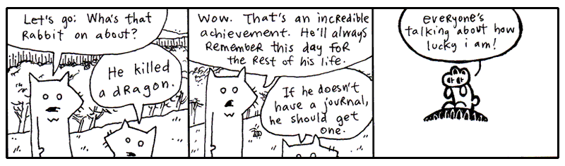
The Making of Dwemthy’s Array
Fast forward to a time when the winds have calmed. The dragon is vanquished. The unwashed masses bow. We love you. We are loyal to you.
But what is this centipede nibbling in your eardrum? You dig with your finger, but you can’t get him out! Blasted! It’s that infernal Dwemthy’s Array again. Explain yourself Dwemthy!
Here, I shall unmask the List itself for you.
class DwemthysArray(list):
def __getattr__(self, name):
if not self:
raise AttributeError(name)
answer = getattr(self[0], name)
if self[0].life <= 0:
self.pop(0)
if not self:
print("[Whoa. You decimated Dwemthy’s Array!]")
else:
print(f"[Get ready. A wild {self[0].name} has emerged.]")
return answer
You can add this new class to the end of your dwemthy.py file. You then import it, before using like so: from dwemthy import DwemthysArray.
By now, you’re probably feeling very familiar with inheritance. The DwemthysArray class inherits from list, so it retains normal list behavior and adds its own missing-attribute behavior. For being such a mystery, it’s alarmingly brief, yeah?
Import the classes, create our rabbit, define the foes, and put them into a DwemthysArray and finally we can get started.
After all the hype, Dwemthy’s Array is actually just a list. Filled with monsters. But what does this extra code do?
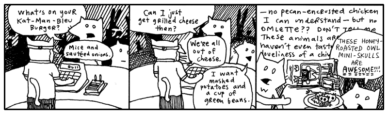
Method Missing
Don’t you hate it when you yell “Deirdre!” and like ten people answer? That never happens in Python. If you call the deirdre method, Python looks for an attribute named deirdre and, if it finds one, that’s the one you get. You can’t have two methods with the same name in a class. If you add a second deirdre method, the first one disappears.
You can, however, have an object which answers to names that don’t actually exist.
class NameCaller:
def __getattr__(self, name):
def dynamic_method(*args):
print(f"You're calling `{name}` and you say:")
for say in args:
print(" " + str(say))
print("But no one is there yet.")
return dynamic_method
def deirdre(self, *args):
print("Deirdre is right here and you say:")
for say in args:
print(" " + str(say))
print("And she loves every second of it.")
print("(I think she thinks you're poetic.)")
When you call the deirdre method above, I’m sure you know what will happen. Deirdre will love every second of it, you and your dazzling poetry.
But what if you call simon?
>>> NameCaller().simon("Hello?", "Hello? Simon?")
You're calling `simon` and you say:
Hello?
Hello? Simon?
But no one is there yet.
Python first tries to find an attribute called simon. There isn't one, so it gives __getattr__ a chance to answer.
Notice that the __getattr__ method of NameCaller is quite interesting. Not only does it return a function, but it defines a function right inside itself! __getattr__ doesn't run this inner function, dynamic_method. It simply hands it back to Python.
There's a little bit of magic happening here. The inner dynamic_method remembers the name from the __getattr__ call that created it. This is called a closure: a function that remembers information from the place where it was created.
Why do we need to use a closure here? Because __getattr__ creates a new function for every missing attribute. When we ask for simon, it creates a function that needs to remember "simon". When we ask for blix, it creates another function that needs to remember "blix". Without the closure, the dynamic_method function loses track of name. The closure gives each function its own little memory to hold on to the name that created it.
What's a closure?
Closures
Imagine you hire a little assistant, give them a task, and send them off into the world. Before they leave, you whisper a few important details in their ear: “When you see Alice, give her the blue envelope.” The assistant remembers. Even after you have left the room, they still have that information tucked away.
Functions can do something similar.
A closure is a function that remembers variables from the place where it was created. This is useful when we want to create a function with some information already attached to it, so the function can use that information later.
For example, we can make a little greeting factory:
def make_greeter(name):
def greet():
return f"Hello, {name}!"
return greet
alice_greeter = make_greeter("Alice")
bob_greeter = make_greeter("Bob")
print(alice_greeter())
# Hello, Alice!
print(bob_greeter())
# Hello, Bob!
When make_greeter() creates greet(), the inner function remembers the name it was given. So alice_greeter remembers "Alice", while bob_greeter remembers "Bob".
Closures bind variables
In Python, closures bind variables, not values. This means the inner function remembers the variable itself, rather than making a copy of whatever value the variable had when the closure was created. When the function is called later, it uses the current value of that variable within the scope where it was defined
For example:
def make_greeter():
name = "Alice"
def greet():
return f"Hello, {name}!"
name = "Bob"
return greet
greeter = make_greeter()
print(greeter())
# Hello, Bob!
When greet() is created, name contains "Alice". But the closure does not take a snapshot of "Alice". It remembers the variable name. By the time we call greeter(), that variable contains "Bob", so "Bob" is used.
That's the useful trick behind a closure: a function can carry a little piece of its creation history around with it.
So when __getattr__ receives "simon", it creates dynamic_method, which remembers "simon". __getattr__ then finishes, but the returned function still has access to that name. Later, when Python calls it, it knows exactly which missing attribute you were trying to reach.
In other words, __getattr__ is a little function factory. It makes functions on demand, and closures let those functions remember what they were made for.
Now look at the dynamic_method function definition.
The asterisk before args means that any positional arguments are collected into a tuple. So __getattr__ captures the name of the missing attribute, creates a function that remembers that name (via a closure), and hands the function back to Python.
Here's the sequence: __getattr__ receives "simon" as name and creates dynamic_method. Because dynamic_method is a closure, it remembers "simon". __getattr__ then returns the function, and Python calls it with "Hello?" and "Hello? Simon?". Those arguments become the args tuple. We loop over args, print them out, and we're done!
Yes, __getattr__ is like an answering machine that intercepts your method call. In Dwemthy’s Array, we use a similar trick for call forwarding. When you attack the Array, it passes that attack straight on to the first monster in the list.
The basic forwarding idea looks like this:
The collection does not need to know what attack you are making. It simply asks the first monster, “Do you know what this is?” And the monster gets to answer.See! See! That skinny little __getattr__ passes the buck!
Because of this neat trick also known as dynamic attribute lookup, our bold rabbit can fight an entire list of monsters rabbit % dwary and fulfill his destiny.
Or use __getattribute__ to intercept EVERY attribute lookup
There is also a more powerful hook called __getattribute__. Unlike __getattr__, which is called only when normal lookup fails, __getattribute__ is called for every attribute lookup.
class NameCaller:
def __getattribute__(self, name):
print(f"Someone is asking for `{name}`.")
return super().__getattribute__(name)
def deirdre(self):
print("Deirdre is right here!")
Now every attribute access passes through __getattribute__ and even our original method is overridden:
>>> caller = NameCaller()
>>> caller.deirdre
Someone is asking for `deirdre`.
<bound method NameCaller.deirdre of ...>
This makes __getattribute__ extremely powerful and easy to abuse. It is useful when you genuinely need to intercept or customize all attribute access. For most situations, __getattr__, the simpler tool, is all we need!
4. So, Let's Be Clear: The Porcupine Is Now To The Sea
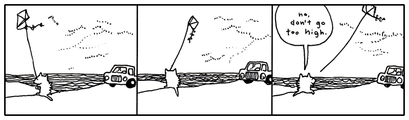
5. Walking, Walking, Walking, Walking and So Forth
The evening grew dark around the pair of foxes. They had wound their way through alleys packed with singing possums, and streets where giraffes in rumpled sportscoats bumped past them with their briefcases. They kept walking.
And now the stores rolled shut their corrugated metal lids. Crickets crawled out from the gutters and nudged at the loose change.
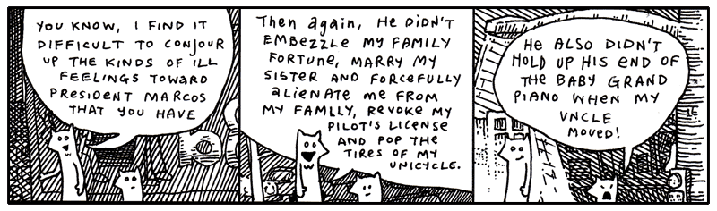
“Anyway, you must admit he’s a terrible President,” said Fox Small. Why does President Marcos have a rabbit as Vice President of the Foxes.”
“The Vice President? The rabbit with the eyebrows?”
“No, the rabbit with the huge sausage lips,” said Fox Small.
But their conversation was abruptly interrupted by a freckly cat head which popped from the sky just above the sidewalk.
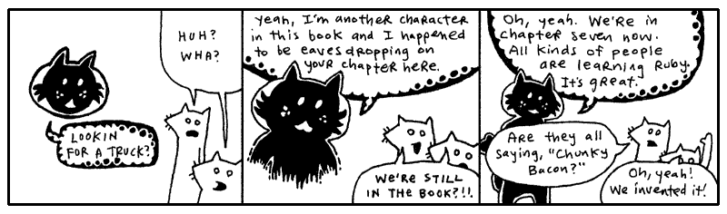
What is this about?!
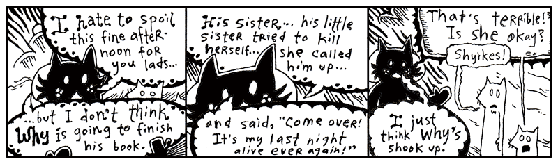
Oh, come on. This is rich. More meta.
I’m not going to bother illustrating this discussion Blix had with the foxes at this point! It’s all a bunch of conjecture. HOW can they presume to know the landscape of my family drama? I love my sister. For a long time, I worshipped her. (This is my sister Quil.)
I admit that there was a pretty painful day a few months ago and I kind of freaked out. I was laid out on the long patio chair by the pool in my mom’s backyard. I had a Dr. Pepper and a bit of German chocolate cake. I was eating with a kid fork. Everything else was in the dishwasher, that’s all they had. Three prongs.
My mom started talking about Quil. All about how much money she was blowing on pants and purses. A five-hundred dollar purse. And then she said, “She’s losing it. She sounded totally high on the phone.” (She nailed it on the head, Quil was smoking dope and loving it.)
So I’d been noticing how observant my mom could be. That’s why, when she said, “I actually think she’s on cocaine,” I physically stood up and chucked my soda across the yard.
It sailed off into the woods somewhere. We had been talking awhile, so it was dark when the can flew. I paced a bit. And then I screamed at the top of my lungs.
My uncle Mike was standing there with the glass door open, staring at me. He said something totally nervous like, “Oh, okay. Well, I’ll—” And the tea in his glass was swishing back and forth, sloshing all over. He disappeared. He’s not very good at saying things to people. He’s more of a whistler. And resonant.
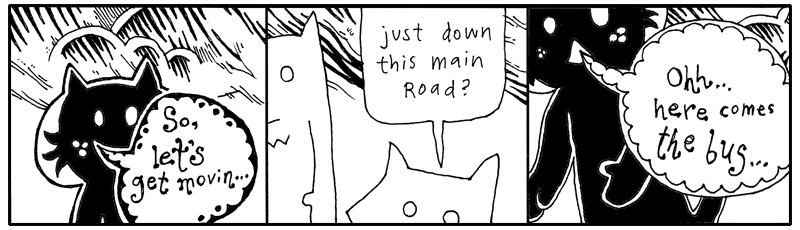
So, to be completely honest, yes, I got a little mad. I got mad. You know. I dealt with it. Quil calls me regularly. For some stupid reason, I rarely call her.
Plus, she didn’t end up killing herself. So it’s just not an issue. Who knows if it was real. She just had a lot of vodka. And she’s little. So it was just scary to see Quil guzzling it down like that. I mean forcing it down.
But why talk about it? It’ll just make her feel like I’m disappointed. Or like I’m a jerk.
Well, I got off track there a bit. Where was I? Blix is basically helping the foxes around, getting them on the trail of their truck. Yeah, back to all that.
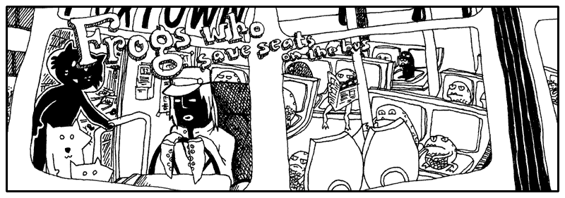
“We can’t squeeze on to this bus,” said the smallest fox.
“Guys, walk on up,” said Blix. “What’s the hold up? Oh, the frogs. Yeah, just squeeze through.” Blixy pushed from behind.
“Hey,” said the Tall Fox. “I’m crammed on this little step! Somebody move!”
“Did you get through—young fox??” said the cat.
“No,” said Fox Small, “can’t you see? The driver keeps shaking his head and it’s really making me nervous. I don’t think he wants us on.”
“Go,” said Blix. He stepped down from his step and walked around the bus, peering through the plexiglass windows. “Well, I don’t know, guys. I dunno. I guess it’s got a lot of frogs.” He pounded on the window. “Hey! Move over!”
And that’s the reality of riding intercity transit in Wixl. It’s terribly competitive. The morning bus is so crowded that most white collar animals get frogs to hold their seat through the nighttime. For whatever reason, it works. It’s become this staple of their workflow and their economy.
Printing with %, format(), and f-strings
If you can muster up a bit of imagination, you can see a percent sign as a frog’s slanted face. Got the picture in your head? Now let me show you frogs that camp out inside strings.
>>> "Seats are taken by %s and %s." % ("a frog", "a frog with teeth")
'Seats are taken by a frog and a frog with teeth.'
>>> frogs = (44, 162.30)
>>> stats = "Frogs have filled %d seats and paid %f blue crystals."
>>> stats % frogs
'Frogs have filled 44 seats and paid 162.300000 blue crystals.'
The %s format is for placing strings. The %d format is for placing integers, while %f is for floating-point numbers.
Python's % string formatting is an older style of string formatting that is still supported today. The values are placed into the string according to the format specifiers. If you provide several values, put them in a tuple.
Formatting is flexible with types. For example, %s will convert almost anything to a string:
>>> frogs = ("44", "162.30")
>>> "Frogs have filled %s seats and paid %s blue crystals." % frogs
'Frogs have filled 44 seats and paid 162.30 blue crystals.'
See, here's the % operator called like other operators:
You can also use the str.format() method, which provides another way to build strings:
>>> "Frogs are piled {} deep and travel at {} mph.".format(5, 56)
'Frogs are piled 5 deep and travel at 56 mph.'
For the most part, you’ll encounter %s for strings, %d for integers, and %f for floating-point numbers when reading older Python code. For new code, f-strings are often the clearest choice; str.format() remains useful when a format string is stored separately from its values.
Yeah, so, frog formatting is really handy for building strings that are assembled from different kinds of data. But there’s another trick worth knowing. You can control the order in which values appear by using numbered fields with str.format():
>>> "This bus has {0} more stops before {1} o'clock. That's {0} more stops.".format(16, 8)
"This bus has 16 more stops before 8 o'clock. That's 16 more stops."
You can also allot a certain number of characters for each item, a width. If an item is smaller than the width, extra spaces will be used to pad it. A negative width in the old % formatting syntax left-justifies the value:
>>> "In the back of the bus: %30s." % "frogs"
'In the back of the bus: frogs.'
>>> "At the front of the bus: %-30s." % "frogs"
'At the front of the bus: frogs .'
Fox Small kept looking up at the bus driver. Remember, he wouldn’t enter the bus!
“What’s the deal?” said Fox Tall. “Can’t you just get on and we’ll just stand in the aisle?”
“You really want to get on this bus? That driver has no hands,” said Fox Small, speaking close and hushed to Fox Tall, “and all he has, instead of hands, are sucker cups.”
“So what? You don’t think animals with tentacles can drive?”
“Well, not only is he going to flub up the steering wheel but he has all these legs all over the foot pedals. This is not smart. Let’s get another bus. Come on.”
“You know, he’s probably been driving like that all day. Is he really going to start crashing at this point in his career?”
“Buses do crash,” said Fox Small. “Some do. This smells crashworthy.”
“Sheer doo-doo!” And Fox Tall yelled to the driver, “Hey, cabby, how long have you been driving this bus for?”
The bus driver peered over darkly under his cap and started to turn toward them, but his tentacles were stuck to the wheel. He jerked swiftly at his forelegs and, failing their release, he turned to the wheel and focused his energies on milking his glands for some slicker secretions. Bubbles of mucus oozed.
“Let’s get outta here,” said Fox Tall and the two ran off into the street, slamming right into the cat Blix.
“Alright, well, the bus is full,” said Blix. “I don’t know why the driver stopped if he knew the bus was crammed with hoppers.”
“We’re thinking he was about to crash into us,” said Fox Tall, “and he opened the door to make it look like a planned route stop.”
“Keep in mind, Blix, we hadn’t really discussed that possibility out loud, so I haven’t had a chance to formally agree,” said Fox Small. “Nevertheless, it sounds rational to me.”
“I’m thinking all the buses are going to be full like this.” Blix bit his lip, thinking and flicking his eyes about. “Let’s just—” He pointed down the circuitry of apartment buildings that wound to the south. “But maybe—” He looked up and surveyed the stars, scratching his head and counting the constellations with very small poking motions from the tip of his finger.
“Are you getting our bearings from the stars and planets?” asked Fox Small.
Blix didn’t speak, he ducked off to the north through a poorly laid avenue back behind the paint store. But before we follow them down that service road, Smotchkkiss, I have one more frog for you, perched on a long lilypad that stretches out to hold anything at all.
>>> cat = "Blix"
>>> print(f"Does {cat} see what's up? Is {cat} aware??")
Does Blix see what's up? Is Blix aware??
The little frogs from earlier (%s or %d) were only placeholders for single values, saving places in the string.
The lilypads above use a different trick. Inside an f-string, curly braces mark an expression that Python evaluates and inserts into the string. The f before the opening quote tells Python to create a formatted string.
An empty pair of curly braces isn't valid in an f-string:
When an expression appears inside the curly braces of an f-string, Python evaluates it and places the result in the string. This is called string interpolation.
>>> fellows = ["Blix", "Fox Tall", "Fox Small"]
>>> print(f"Let us follow {' and '.join(fellows)} on their journey.")
Let us follow Blix and Fox Tall and Fox Small on their journey.
The lilypad can hold much more than a simple variable. You can call methods, use conditional expressions, and perform calculations right inside the braces.
>>> blix_went = "north"
>>> direction = (
... "a poorly laid avenue behind the paint store"
... if blix_went == "north"
... else "the circuitry of apartment buildings"
... if blix_went == "south"
... else "... well, who knows where he went."
... )
>>> print(f"Blix didn't speak, he ducked off to the {blix_went} through {direction}.")
Blix didn't speak, he ducked off to the north through a poorly laid avenue behind the paint store.
The foxes followed Blixy off behind the paint store and down the cracked, uneven asphalt. All of the stores on the dilapidated lane leaned at angles to each other. In some places, slabs of sidewalk jutted up from the ground, forming a perilous walkway, a disorderly stack of ledges. Almost as if the city planners had hoped to pay tribute to the tectonic plates. One small drug store had slid below the surface, nearly out of eyesight.
Truly, it was colorful, though. The paint store had been tossing out old paints directly onto its neighbors. The shops nearest the paint store were clogged with hundreds of colors, along the windowsills and in the rain gutters. Yes, on the walls and pavement.
Basically, beginning with the back porch of the paint store, the avenue erupted into a giant incongruous and poorly-dyed market.
Further down, a dentist’s office was primed with red paint and, over that, a fledgling artist had depicted a large baby who had fallen through a chimney and arrived in a fireplace full of soot. Crude black strokes marked the cloud of ashes raised during impact, easily mistaken for thick hair on the child’s arms and back. The child looked far too young to have much hair, but there they were: rich, blonde curls which toppled liberally from the child’s head. Under the child’s legs was painted the word BREWSTER.
The same artist had hit the library next store and had hastily slapped together a mural of a green sports car being pulled from the mud by a team of legless babies tugging with shiny chains. Again, the drastically blonde curls!
“I need answers,” said the Fox Tall, who had ground to a halt in front of the scenery.
“I’m starting to believe there’s no such thing,” said Fox Small. “Maybe these are the answers.”
“Brewster?” said Fox Tall. He walked nearer to the library and touched the cheek of one of the legless children who was closer in perspective. The child’s cheek appeared to contain a myriad of jawbones.
Blix was another two houses down, navigating through the askew brickwork, the paved gully that led to R.K.’s Gorilla Mint, as the metallic sticker on the door read. The building was plastered with miniature logos for the variety of payment options and identification acceptable at R.K.’s Gorilla Mint. Even the bars over the window were lined with insurance disclosures and security warnings and seals of government authorization, as well as addendums to all of these, carbon paper covering stickers covering torn posters and advertising. And all mingled with paint splashes that intruded wherever they pleased.
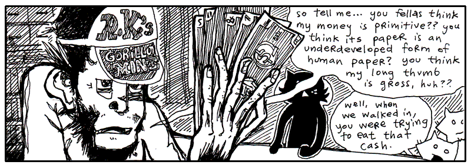
“I like the way the fresh paper feels against my tongue,” said the gorilla at the counter. His fingers rubbed quietly against the bills. He drew his face near to the fanned currency and whisked his nose along the pulpy cash.
“Is R.K. in this evening?” asked Blix.
“R.K. is not,” said the gorilla cashier. He turned to the three travelers and spread his money out on the counter’s surface, evenly spacing them apart and lining up all the edges neatly. “Now, which one of these do you think is worth the most?”
The foxes looked over the different bills and Fox Small muttered to himself, “Well, maybe—no, but I’ll bet—Wait, does one of these have bananas on it? ‘Cause that one—nope, no fruit or rope swings or—Terrible, this is difficult!” And in a lower voice, “So difficult to read. What does this one say? Symbols or something? If all these bills have are symbols, it’s going to be impossible for us to figure out which one is of the greatest value.”
“That’s why I said, ‘Guess.’” The gorilla tapped each bill in order. “See, you’ve got a 1 in 5 chance.”
“Unless the symbols mean something,” said Fox Tall. “Unless we can figure it out.”
“We can figure it out,” said Fox Small.
“No,” said the gorilla. “The symbols are meaningless.”
“Whoever created the money intended some meaning for them,” said Fox Small. “Why use this symbol?” He pointed to an ampersand printed in dark ink.
“Yeah, we saw you sniffing the money and fantasizing about it back there,” said Fox Tall. “I’ll bet these symbols mean all kinds of things to you!”
“No, I don’t think so,” said the gorilla.
If I can weigh in at this point, I think the symbols do have meaning. They may not be loaded with meaning, it may not be oozing out through the cracks, but I’m sure there’s a sliver of meaning.
“I don’t remember you.” Blix looked at the gorilla with great interest. “Are you one of R.K.’s kids or something?”
“Oh, come on!” said Fox Small, holding up a bill with an exclamation mark on it up to the gorilla’s nose. “Don’t tell me this means nothing to you! This one is probably really important since it has an exclamation on it. Maybe it pays for emergency stuff! Hospital bills or something!”
“Yeah, surgery!” said Fox Tall.
The gorilla looked at the foxes with disgust from under the brim of his cap.
“No, you’re wrong. You can’t pay for surgeries with that.”
“But you see our point,” said the small fox. He grabbed some of the other bills. “And you say this bill cannot pay for surgeries? Well that sounds like it has a specific non-surgery-related purpose. Now, the question mark one. Oh, what would that one be for?”
“Hey, give me those,” the gorilla snatched at the bills over the counter, but his long thumb kept getting in the way and every time he thought he had grabbed bills, it turned out he had only grabbed his long thumb.
“Hey, hey, look, he’s mad,” said Fox Tall, happily clapping. “I wonder why. Did you notice how mad he started getting once we mentioned all these interesting meanings? We’re on to you! We figured out your game so fast!”
“We totally did!” said Fox Small, one of his elbows caught in the grip of the gorilla, the other arm waving a bill that featured an underscore. “This one’s for buying floor supplies, maybe even big rolls of tile and linoleum.”
“See,” said Fox Tall, working to pry the gorilla’s fingers free, “we just have to figure out which is more expensive: surgery or linoleum! This is so easy!”
“NO IT’S NOT!” yelled the gorilla, yanking at the smaller fox and battering the fox with his palms. “YOU DON’T KNOW ANYTHING ABOUT MONKEY MONEY!! YOU DON’T EVEN HAVE YOUR OWN KINDS OF MONEY!!”
“We could easily have our own kinds of money!” said Fox Tall, taking the chimp’s hat and tossing it to the back of the room, where it sailed behind a wall of safety deposit boxes. “And—your hat is outta here!”
“Come on, give him back his bills,” said Blix, waving his arms helplessly from the sidelines. “We could really use this guy’s help.”
“Stop hitting me!” screamed the littlest fox. “I’ve almost figured out this one with the dots on it!!”
Suddenly, with great precision and without warning, Fox Tall grabbed the monkey’s nose and slammed his face down against the counter. The pens and inkpads on its surface rattled and “Bam!” said the fox. The gorilla’s eyes spun sleepily as his arms… then his neck… then his head slithered to the floor behind the counter.
String Tools
Here are a few Python string tools you might care to use:
>>> text = "Jeff,Jerry,Jill\nMichael,Mary,Myrtle"
>>> for names in text.splitlines():
... print(names)
Jeff,Jerry,Jill
Michael,Mary,Myrtle
If you want to split on a particular separator, give it to split():
>>> "Jeff,Jerry,Jill\nMichael,Mary,Myrtle".split(",")
['Jeff', 'Jerry', 'Jill\nMichael', 'Mary', 'Myrtle']
Feed a string into .split() and it emerges as a list of words. You jot out the words and let Python figure out where to cut, spaces by default, or pass in a delimiter.
And if you want to join strings, use join():
>>> ["candle", "soup", "mackarel"] .__class__
<class 'list'>
>>> "".join(["candle", "soup", "mackarel"])
'candlesoupmackarel'
>>> " * ".join(["candle", "soup", "mackarel"])
'candle * soup * mackarel'
>>> " # ".join(["candle", "soup", "mackarel"])
'candle # soup # mackarel'
The most important trick to remember is the syntax: you call .join() on the separator (the glue) like so: "separator".join(list_of_strings). So in this case, we use " # " as our separator and join the list back into a long string.
join() only works on lists of strings
The string join() method only works if every item in your list is already a string. If your list contains numbers, Python will throw a TypeError.
The Wrong Way:
mixed_list = ["Year", 2026]
# This will CRASH with a TypeError!
print("-".join(mixed_list))
# Output: TypeError: sequence item 1: expected str instance, int found
The Right Way:
To fix this, you must convert the numbers into strings first. A fast way to do this is using the map function.
Outside the Gorilla Mint, Blix scolded the foxes. “We could have used that guy’s help! If he knows where R.K. is, we could use his cunning!”
“We don’t need that ape’s money!” said Fox Small. “We can make our own money!”
“We could support electronic wristbands!” said Fox Tall.
“His money is worthless,” said Blix. “It’s gorilla money. It has no value. It’s worse than blue crystals.”
“But it serves a purpose,” said Fox Tall.
“No it doesn’t,” said Fox Small. “He just said it’s worthless.”
“But what about linoleum and surgeries?” said Fox Tall.
“Yeah,” said Fox Small, up at Blix. “What about linoleum and surgeries?”
“If all the hospitals were staffed by gorillas and all the home improvement chains were strictly operated by gorillas, then—YES—you could buy linoleum and surgeries. But I guarantee that you would have very sloppy linoleum and very hideous surgeries. I don’t think you’d make it out of that economy alive.”
“So, if R.K. is so cunning,” said Fox Tall, grinning slyly, “why does he print such worthless currency?”
“It’s a cover for other activities,” said Blix. “Besides, if you’re so smart, why did you resort to violently pounding that poor gorilla?”
“I guess that was a bad play,” said Fox Tall, hanging his head. “My friend here will tell you that I’ve been on edge all day.”
“And your rage finally reared its fuming snout!” said Fox Small. “You’re finally living up to your goatee.”
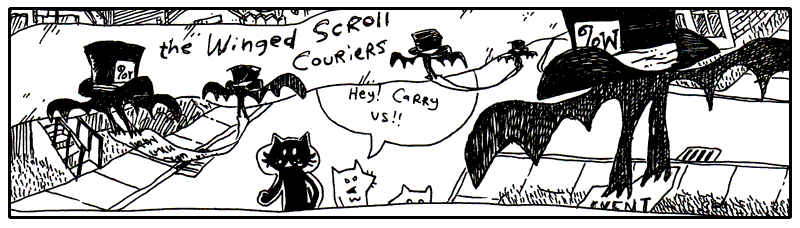
Down the lanes they travelled, the two foxes oblivious to their direction, but having a good time now that they had Blix leading the way with such urgency.
They lapsed into a careless wandering right behind Blix and spent their afternoon heckling most of the passersby.
One such target of their ongoing commentary was The Winged Scroll Carriers, pairs of bats that carry format specifiers which need to be immediately sworn and notarized. There can be no delay, they must go swift, there is not even time to roll up the scroll, no, they must drop their swiss cheese and be out the door.
Fancy Fox Formatting
The foxes marched away from the Gorilla Mint, still arguing about the value of gorilla money.
“I don't care what anyone says,” said Fox Small. “If I had 5000000 gorilla dollars, I'd be rich.”
“You'd be hungry. I already told you, 1000000 gorilla dollars is worth one cat taco.” said Blix.
“Maybe,” admitted Fox Small. “But I'd be rich for gorillas who don't know any better. How many tacos could I buy for 5000000??”
"I can't read that?" Blix squinted at the number. "Is that 500 grand or 5 million?"
gorilla_dollars = 5000000
print(f"I have {gorilla_dollars:,} gorilla dollars!")
# I have 5,000,000 gorilla dollars!
"The :, format adds commas as thousands separators," Blix said.
“Five cat tacos, now that's rich!” said Fox Small.
"Perhaps R.K.'s Gorilla Mint also tracks fractions of a blue crystal?" said Blix.
blue_crystals = 162.30789
print(f"Balance: {blue_crystals:.2f} blue crystals")
# Balance: 162.31 blue crystals
"Hey, I was paid in Blue Crystals for all my work on this book!" added Fox Small.
"The .2f format rounds the number to two decimal places," says Blix.
“Excellent,” said Fox Tall. “Now I only have to be confused by two digits instead of five.”
Blix shook his head slowly, his energy fading.
"But sometimes, we just want to know it'll all be okay," chimed in Fox Small.
"Wow, you aren't doing so well," sighed Blix. "The .1% format multiplies the number by one hundred (making it a percentage) and adds a percent sign."
Fox tall nodded. “That seems about right.”
Fox Small "Well it's not fair. Look at the account statements. I invested in Gorilla Coin because I saw the numbers kept going up, but I didn't realize the exchange rate keeps getting worse. Inflation is the worst!"
for owner, amount in [
("Fox Small", 1500),
("Fox Tall",25000),
("Blix", 70000),
]:
print(f"{owner:<12} ${amount:>8,}")
Output:
"I printed our statements our Gorilla Mint account statement in neat columns. The < left-aligns text, while > right-aligns it. The number after the symbol specifies the field width," said Blix.
“Look at that,” said Fox Tall. “The numbers stand up straighter than my tail.”
"You can also add zero padding and positive signs," Blix said.
print(f"Ticket #{ticket:05d}")
# Output: Ticket #00042
profit = 250
loss = -75
print(f"profits:{profit:+} and losses:{loss:+}")
# Output: profits:+250 and losses:-75
“Nice way to tally up my lottery ticket wins and loses,” said Fox Small.
"Well, if you think that's cool, are a few of the most common f-string formats," replied Blix.
| Format | Meaning | Example |
|---|---|---|
:, |
Add commas | f"{5000000:,}" → 5,000,000 |
.2f |
Two decimal places | f"{3.14159:.2f}" → 3.14 |
.1% |
Percentage | f"{0.037:.1%}" → 3.7% |
05d |
Integer padded with zeros | f"{42:05d}" → 00042 |
+ |
Always show sign | f"{42:+}" → +42f"{-42:+}" → -42 |
>10 |
Right-align in width 10 | f"{42:>10}" → ' 42' |
<10 |
Left-align in width 10 | f"{42:<10}" → '42 ' |
^10 |
Center in width 10 | f"{42:^10}" → ' 42 ' |
And thus the foxes learned that even worthless money can be beautifully formatted. Whether this improved the economy is still a matter of debate.
"Hey, how's about we split some lunch?" said Fox Small.
"Wait we are not done. My favorite is the multiline string. Python's triple-quoted strings are especially useful when you need a string that runs on for many lines. We can run that code using the exec function," Blix adds.
Triple-quoted strings can contain newlines without requiring you to escape them. And, because this is an f-string, you can use curly braces for interpolation. Notice the doubled braces {{ inside the print(...) call: since a single { would normally tell an f-string to start an interpolated expression, doubling it up like {{ (or }} for a closing brace) tells Python you want a literal brace character in the output instead.
"Okay, nice Gorilla face. You are definitely treating us for lunch," said Fox Small.
Python's sys
Blix pulled out a small pocket computer to inspect the system environment where these scripts were running.
As we saw in the previous chapter, Python keeps the directories it searches for imported modules in sys.path:
This list contains the directories Python searches when you import a module.
Remember sys.modules? It contains the modules that have already been imported.
There are several other useful values in the sys module:
The running program's filename is available through sys.argv[0]. You test this like so:
Create a script that prints sys.argv[0] using REPL:
Or manually create the file with the following code:
Now, exit REPL with ctrl-D (or type exit()) and run the script in command shell. You should see the name of the file:
Instead of resorting to violently pounding keys to try to exit, Python can also runs a shell command and hands you back its output using the subprocess module. Depending on your setup, you may need to call python instead of python3.
>>> import subprocess
>>> result = subprocess.run(["python3", "script.py"])
# file: script.py
>>> result = subprocess.run(
... ["python3", "--help"],
... capture_output=True,
... text=True,
... )
>>> print(result.stdout)
The command-line arguments themselves are available through sys.argv:
The sys module also provides an easy way to terminate a bad program:
The module also acts as an information hub for tracking how and where your Python instance is running. As we saw in the previous chapter:
sys.version: Returns a string detailing your current Python interpreter version.
But we also have:
-
sys.platform: Identifies the operating system platform (e.g., 'win32' for Windows, 'darwin' for macOS, 'linux' for Linux). This allows you to write conditional code that safely adjusts based on a user's machine. -
sys.executable: Provides the precise file path to the exact Python runner powering your environment, which is highly useful when debugging messy virtual environment configurations
Copy and Deep Copy
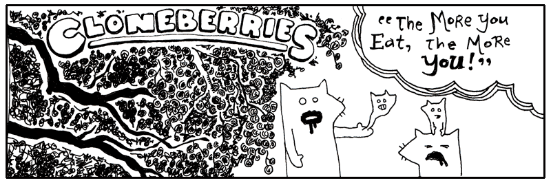
Blixy wagged his head. “Oh, dear me.”
“Egads! My hand is pregnant,” said Fox Tall, watching the little fox embryo slide about in his palm.
“They are good berries, though,” said Blix. “The wine they make from these berries will make ya grow a few eyeballs in your teeth. But no more than that.”
“Ah, pain!” yelled Fox Small, as his miniature squeezed out through the pores in his scalp. But soon he was cradling his little self and murmuring lullablies.
Nevermore, nevermore, sweetly sang the nightingale. Winking starlight, sleeping still, whilst perched on a Sycamore stump.
Making duplicates of Python objects is no more than a berry’s worth of code.
>>> original_tree = ["berry", "berry", "berry"]
>>> treechild = original_tree.copy()
>>> treechild
['berry', 'berry', 'berry']
The copy() method makes a shallow copy of a Python list. How does this differ from regular assignment?
Assigning an object to a variable only creates another nickname. The list above can be called tree_charles_william_iii now, or the shorter original_tree. The same object, but different names.
However, a copy is a new list. You can modify it without affecting the original list:
>>> treechild.append("flower")
>>> treechild
['berry', 'berry', 'berry', 'flower']
>>> original_tree
['berry', 'berry', 'berry']
The copy() method doesn’t make copies of everything attached to the object, though. In the list above, only the list itself is copied. The objects inside are still shared.
For nested objects, Python provides the copy module. copy.copy() makes a shallow copy, while copy.deepcopy() recursively copies the objects contained inside:
>>> import copy
>>> original_tree = [["berry"], ["berry"]]
>>> shallow = copy.copy(original_tree)
>>> deep = copy.deepcopy(original_tree)
To see the difference in action:
>>> shallow[0].append("early frost")
>>> shallow
[['berry', 'early frost'], ['berry']]
>>> original_tree
[['berry', 'early frost'], ['berry']]
>>> deep[0].append("early frost")
>>> deep
[['berry', 'early frost'], ['berry']]
>>> original_tree
[['berry'], ['berry']]
Because shallow only copied the outer list, its nested lists are the very same objects original_tree is holding onto — appending to one appends to the other. deep, on the other hand, got its very own fresh copies of those nested lists, so changing it never touches original_tree at all.
This distinction becomes important whenever your objects contain other mutable objects.
You don’t always need to make copies of objects, though, since many Python operations create new objects for you. For example, list() can create a new list, string methods such as replace() return new strings, and comprehensions create new collections.
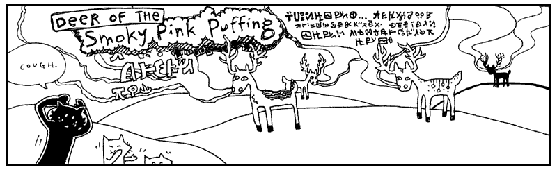
Over the hills and down the valleys, they ran through the grass where the Deer of the Smoky Pink Puffing roam. The sun was obscured by the lumbering pink clouds, emblazened with deer language, tinting the horizon a gradient of grapefruit and secreting a glow over the meadow. The clouds slid past each other, some bobbing upwards, destined for Canadian relatives. Others landing a readable distance from a recipient’s hooves.
“Let’s stop! Please!” yelled Fox Tall. “You can’t expect us to run in this unbreathable fluff!”
“Why are you yelling?” said Blix, as a thin stratus telegram wafted behind his legs. “You don’t need to raise your voice above a whisper. These long skinny clouds are usually just a mumble or a sigh. They may not even make it all the way.”
“All that writing on the cloud is deer talk?” said Fox Small.
“Help! Where are you guys?” The taller fox ducked through a stormy tirade comprised of thick, billowing smoke and sharp wisps. He whirled in every direction, “Somebody yell if you’re there!”
He searched for a fissure in the dense matter, combing forward with his hands. The verbose, angry clouds responded by prodding him ahead, forcing him into tight corners in their brief pause between sentences. He landed in a sinkhole and kept his head down as the cascades of smoke surged forward.
“Yeah, deer can read this stuff,” said Blix. “They just face their target and shoot it out of their nostrils. I once heard of a guy who rode a stag’s love poem.”
“No way,” said Fox Small.
“Yep,” said Blix. “And that guy was me.” Blix reached over his shoulder and latched onto a spiral column of smoke that was twisting just above his head.
“You just have to know which clouds are wimpy and which clouds are grandiloquent.” Blix let the cloud pull him along and when the cloud banked upwards, Blix loosed his grip and kept his feet moving slowly along the ground.
“See, here’s a good one, long like a broom handle. A guy found one once and it was shaped exactly like a car: windshield, driver’s side airbag, power steering. Uncanny!”
“And that guy was—”
“It was!” And Blix climbed up atop the long icy cloud, with its dangling glyphs, and stood proudly, floating high above the small fox’s pointy shadow.
“Oh, I could do that,” said Fox Small. “Tall and I go jetskiing all the time. I’ve stood up on my jetski. It’s just like that.”
Fox Tall dashed through a descending puff, shattering its sentence, which letters came unglued and littered the ground with scrambled words, but he had only succeeded in reaching the depressive portions of the deer correspondence, which manifested itself as a dank and opaque mist.
Meanwhile, his smaller counterpart grabbed a narrow train of smoke that passed under his arm. He was airborned and yelled, “Tallyho!” But he held too tightly and the cloud evaporated under his arm and sent him back down with a short hop.
Regexes
Since you’re just beginning your use of Python, you may not fully grasp regular expressions (or regexes) at first. You may even find yourself clipping regexes out of a regular expression reference and pasting them into your code without having the foggiest idea why the expression works. Or if it works!
import re
while True:
password = input("Enter your password: ")
if re.fullmatch(r"\w{8,15}", password):
break
print("** Bad password! Must be 8-15 characters (letters, numbers, or underscores)!")
Do you see the unreadable deer language in the example code? The r"\w{8,15}" is a regular expression. If I may translate, the regex is saying, Please only allow letters, numbers, or underscores. No less than eight and no more than fifteen.
The \w is shorthand for a word character. In the usual ASCII examples, that means letters, numbers, and underscores.
Regular expressions are a little language built into Python and many other programming languages. I really shouldn’t say little, though, since regexes can be twisted and complicated and become much more difficult than any Python program.
Fortunately, using a regular expression is much simpler than inventing one. It is like the Deer: making the smoke is an arduous process. But hooking your elbow around the smoke and driving it to the Weinerschnitzel to get mustard pretzel dogs is easy.
Let's start with the simplest kind of test. The re.fullmatch() function checks whether the entire string follows the rules in the regular expression.
>>> import re
>>> re.fullmatch(r"\w{8,15}", "good_password")
<re.Match object; span=(0, 13), match='good_password'>
>>> re.fullmatch(r"\w{8,15}", "this_bad_password_too_long")
If the entire string satisfies the pattern, fullmatch() returns a Match object. If it doesn't, it returns None.
But regexes aren't only useful for checking whether an entire string follows a pattern. One of their most common uses is searching for a pattern inside a larger string.
Let's say you've got a big file and you want to search it for a word or phrase. Since a bit of time has passed, let's search the Preeventualist's Losing and Finding Registry again.
import re
import preeventualist
for page in preeventualist.search_found("truck"):
for line in page.splitlines():
if re.search(r"truck", line):
print(line)
This isn't too different from the code we used earlier to search for lines with the word "truck". In fact, if you're only looking for a simple word, if "truck" in line is easier. The regular expression r"truck" does essentially the same search.
But what if the truck is capitalized?
Truck.
What then?
Now we have encountered our first character classes, also called character sets. These are the sections surrounded by square brackets. Each character class gives a list of characters that are valid matches for that spot.
The first class, [Tt], matches either an uppercase T or a lowercase t. The second, [Rr], matches an R or an r. And so on.
But there is an easier way to tell Python that we don't care about capitalization:
The re.IGNORECASE flag makes the search case-insensitive. It will match Truck. And TRUCK. And TrUcK. And other ups and downs.
So far, our regexes have matched ordinary letters. But regexes become much more interesting when we use special characters that stand for whole categories of characters.
Oh, and maybe your truck is a certain model number. A T-1000. Or a T-2000. You can't remember. It's a T something thousand.
See, deer language. The \d represents a digit. It is a placeholder in the regex for any digit. Our expression will therefore match T-1000, T-2000, all the way up to T-9000.
Here are some of the most useful character shortcuts:
Character Sets for Regular Expressions
| Pattern | Matches | Equivalent |
|---|---|---|
\d |
digits | [0-9] |
\w |
word characters | letters, numbers, and _ |
\s |
whitespace | spaces, tabs, newlines, etc. |
\D |
anything but digits | [^0-9] |
\W |
anything but word characters | the opposite of \w |
\S |
anything but whitespace | the opposite of \s |
. |
almost any character | — |
Building a regex involves chaining these shortcuts together to express your search. If you're looking for a number followed by whitespace, you could write:
If you're looking for three numbers in a row, you could write:
But typing the same thing over and over gets tiresome. Fortunately, regexes have quantifiers that tell Python how many times a pattern should repeat.
Quantifiers
| Pattern | Meaning | Example |
|---|---|---|
{n} |
match exactly n times | r"\d{3}" |
{n,} |
match n times or more | r"[a-z]{3,}" |
{n,m} |
match between n and m times | r"[\d,]{3,9}" |
* |
match zero or more times | r":\w*" |
+ |
match one or more times | r"[-]+" |
? |
match zero or one time | r"\d{3}[.]?" |
So our three-digit search can now be written as:
The {3} tells Python to look for exactly three digits.
Let's put character classes and quantifiers together. A really common example is matching phone numbers. An American phone number with an area code can be described with three digits, a hyphen, three more digits, another hyphen, and four final digits.
>>> re.search(r"\d{3}-\d{3}-\d{4}", "Call 909-375-4434")
<re.Match object; span=(5, 17), match='909-375-4434'>
>>> re.search(r"\(\d{3}\)\s*\d{3}-\d{4}", "The number is (909) 375-4434")
<re.Match object; span=(14, 28), match='(909) 375-4434'>
This time, instead of using fullmatch() to test the entire string, we used search() to find the expression anywhere inside the string.
The re.search() function returns a Match object when it finds a match and None when it doesn't.
The Match object contains useful information about what was found. For example, .group() gives us the actual text that matched:
>>> phone = re.search(
... r"\(\d{3}\)\s*\d{3}-\d{4}",
... "The number is (909) 375-4434"
... )
>>> phone.group()
'(909) 375-4434'
Keeping the Match object in a local variable is useful because we can examine it after the search. If you run several regular expressions, you can keep each result in its own variable.
So far, we've used regexes to find things. But what if we want to change what we find?
Another common use of regular expressions is search-and-replace. You can search for the word "cat" and replace it with the word "banjo." Sure, you can do that with ordinary strings, too.
>>> song = "I swiped your cat / And I stole your cathodes"
>>> song.replace("cat", "banjo")
'I swiped your banjo / And I stole your banjohodes'
>>> re.sub(r"\bcat\b", "banjo", song)
'I swiped your banjo / And I stole your cathodes'
The re.sub() function substitutes every match of the regular expression. Notice how str.replace() replaced the cat at the beginning of both words, including the first three letters of cathodes.
The regex version uses \b, which means a word boundary. It therefore matches cat as a complete word without matching the cat inside cathodes.
If you only want to replace the first occurrence, give re.sub() a count:
And so this chapter ends, with Blix and the Foxes cruising aloft the solid pink belched from a very outspoken deer somewhere in those pastures.
6. Just Stopping To Assure You That the Porcupine Hasn't Budged
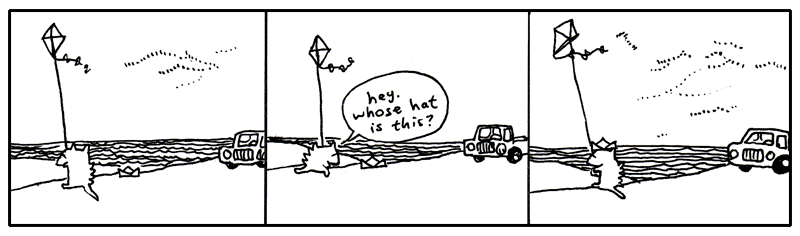
7. I'm Out
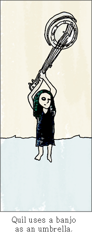
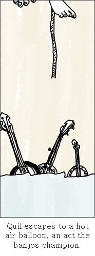
One day, back around the time I met Bigelow (that dog who walked off with the balloons), I came back to my apartment hauling some board games I’d bought at a garage sale. And Quil was on my porch. Which stunned me since she’d been in San Antonio for like three years. She was sleeping in a sleeping bag on my porch.
She had run out of money to go to art school, so she stayed at my place for five months or so.
I found this used bunkbed for our place. At night we’d sit in our beds and read each other stories from our notebooks. I was writing a book about a kid who’s a detective and he’s trying to figure out who killed this kid on his tennis team and all these animals end up helping him figure it out. She was writing a book about this kid who puts an ad in the classifieds to get other kids to join his made-up cult and they end up building a rocket ship. But during most of her book these kids are lost in the woods and pretty directionless, which I got a kick out of hearing each night.
Yeah, each night it was poetry or stories or ideas for tricking our neighbors. Our neighbor Justin was a big fan of Warhammer and he had all these real swords and tunics. We decided to make suits of armor out of tin foil and go attack his apartment. We started ransacking his apartment and he loved it. So he made his own suit of armor out of tin foil and we all went to a professional glamour studio and had a quality group shot taken.

I’m not saying my life is any better than yours. I just miss my sister. Life isn’t like that now. We’re dissolved or something.
I don’t know. I’m confused. Is this growing up? Watching all your feathers come off? And even though some of those feathers were the most lovely things?
I’m having a hard time telling who stopped it all up. Who stopped loving who? Did I stop caring? Maybe I only saw her in two-dimensions and I didn’t care to look at the other angles. I only saw planes. Then she shimmied up the z-axis when I wasn’t looking and I never did the homework to trace the coordinates. A limb on a geometrical tree and I am insisting on circles.
Blix was right. I’m in so shape to write this book. Goodbye until I can shake this.
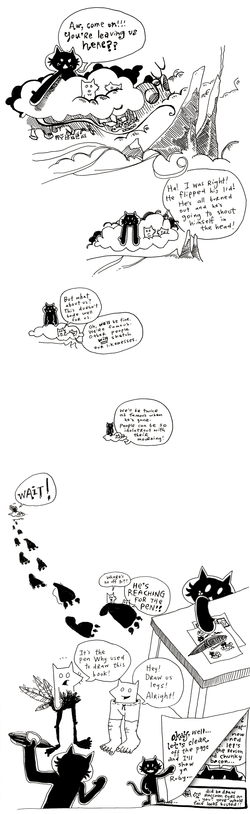